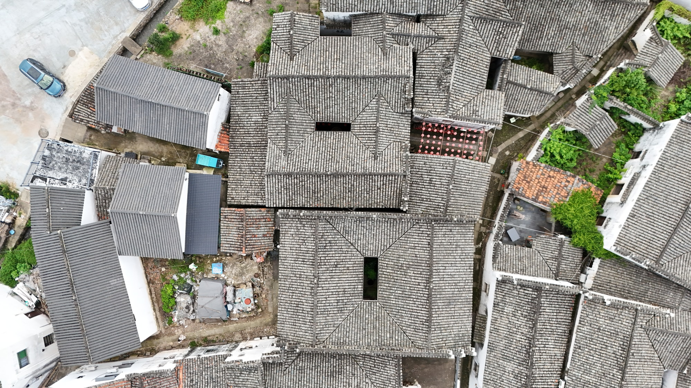

国保传统民居
屋瓦相连，巷路悠长世美堂
世美堂是全国重点文物保护单位“新叶村乡土建筑”的传统民居之一。从空中望去，它与周围老宅共同嵌在古村密集的屋面之间，成为新叶传统居住空间的一部分。
01
一条通往南塘的街巷
世美堂南侧有一段大致呈东西走向的街巷，沿它一路向西便可通往南塘。在新叶村密集相连的民居之间，这样的街巷把一户户人家与村中最大的水塘连在一起；从世美堂出发的这条巷道，正是村民走向南塘水边的日常通路之一。

世美堂是全国重点文物保护单位“新叶村乡土建筑”的传统民居之一。从空中望去，它与周围老宅共同嵌在古村密集的屋面之间，成为新叶传统居住空间的一部分。
世美堂南侧有一段大致呈东西走向的街巷，沿它一路向西便可通往南塘。在新叶村密集相连的民居之间，这样的街巷把一户户人家与村中最大的水塘连在一起；从世美堂出发的这条巷道，正是村民走向南塘水边的日常通路之一。